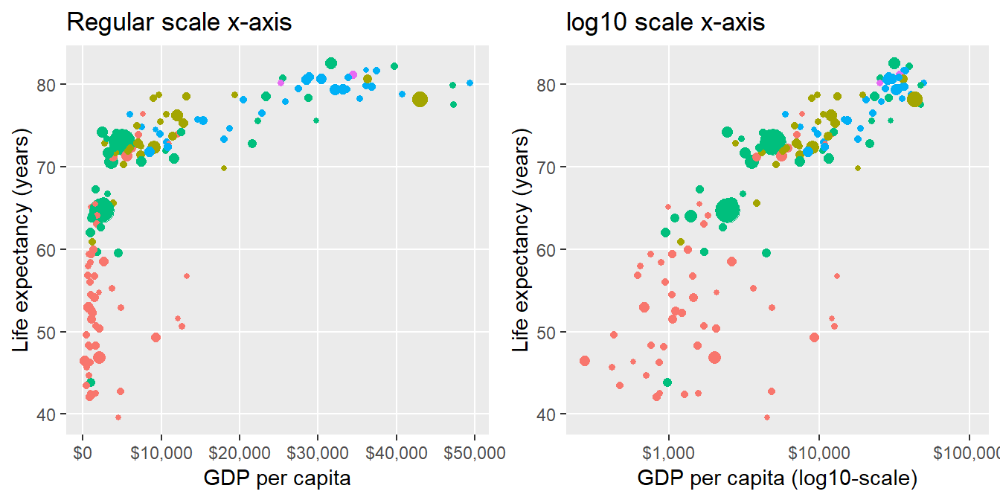

Midterms
Midterm III
Administrative
- Friday 11/30 5pm through Sunday 12/2 11:55pm.
- Self-scheduled exam instructions. In particular:
- Only print from macOS computers.
- At some point you’ll need to wait 5-10 seconds for a “paper is held in queue” pop-up box to appear before you can print.
- Closed-book, no internet, and individually completed.
- You must take it no more than 120 minutes (including transit time) to complete it and submit it by 11:55pm on Sunday. Timestamps will be verified and any exam with timestamps indicating more than 120 minutes will be docked 50%.
- Please bring:
- Colored pens
- A calculator: TI-84 type calculators acceptable, mobile phone apps are not.
- Extra help:
- Jenny office hours. Book appointments here.
- Albert extra office hours TBD.
- Read cover page (slightly different from last time):
Topics
- Topics:
- Lectures 1-28 but not the “tacticle resampling simulation”. Yes it is cummulative in that topics build on top of each other, but focus is on Lec 19-28 on multiple regression and sampling.
- The corresponding “chalk talk” notes and ModernDive readings in Chapter 1 through 8.
- Types of questions:
- Before Wednesday, do the practice midterm questions PDF. I do not have a PDF of solutions, we’ll cover these in class on Wednesday. Note this is a compilation of a few midterms, so its length is not reflective of what you can expect on the midterm. Do the following questions:
- Question 1 - Obama polling: Parts a), b), c), d), e),
- Question 2 - Teaching evaluations: All parts. Note this question was also included in practice midterm II.
- Question 2 - Sampling: Parts a), b), c), d), e), f), g), h)
- Question 4 - Pennies: Parts a), c), e), f).
- Data Modeling: Go over Modeling with Data in the Tidyverse Chapters 3 and 4.
- Go over all problem sets and solutions. Note PS10 solutions will be posted right after lecture on Wed 11/28.
- Before Wednesday, do the practice midterm questions PDF. I do not have a PDF of solutions, we’ll cover these in class on Wednesday. Note this is a compilation of a few midterms, so its length is not reflective of what you can expect on the midterm. Do the following questions:
Midterm III Distribution

Note about Question 3.b) from the Wikipedia page for the Kinsey Reports:
In 1948, the same year as the original publication, a committee of the American Statistical Association, including notable statisticians such as John Tukey, condemned the sampling procedure. Tukey was perhaps the most vocal critic, saying,
“A random selection of three people would have been better than a group of 300 chosen by Mr. Kinsey.”
Psychologist Abraham Maslow asserted that Kinsey did not consider “volunteer bias”.
Midterm II
Administrative
- Friday 11/2 5pm through Sunday 11/4 11:55pm.
- Self-scheduled exam instructions. In particular:
- Only print from macOS computers.
- At some point you’ll need to wait 5-10 seconds for a “paper is held in queue” pop-up box to appear before you can print.
- Closed-book, no internet, and individually completed.
- You must take it no more than 120 minutes (including transit time) to complete it and submit it by 11:55pm on Sunday. Timestamps will be verified and any exam with timestamps indicating more than 120 minutes will be docked 50%.
- Please bring:
- Colored pens
- A calculator: TI-84 type calculators acceptable, mobile phone apps are not.
- Extra help:
- Jenny office hours. Book appointments here.
- Albert extra office hours Friday 11/2 2:30-4pm in McConnell 215.
- Read cover page (slightly different from last time):

Topics
- Topics:
- Lectures 1-18. Yes it is cummulative in that topics build on top of each other, but focus is on Lec 8-18 on Data Wrangling and Basic Regression with one explanatory variable (no Multiple Regression with more than one explanatory variable).
- The corresponding “chalk talk” notes and ModernDive readings in Chapter 1 through 6.
- Types of questions:
- Before Wednesday, do the practice midterm questions PDF. I do not have a PDF of solutions, we’ll cover these in class on Wednesday. Note this is a compilation of a few midterms, so its length is not reflective of what you can expect on the midterm. Do the following questions:
- Question 3 - Life Expectancy: All.
- Question 1 - Short Answer: Parts a) 1-4, b), d), e)
- Question 2 - Teaching Evaluations (optional). If you can do this multiple regression question, you’ll be in good shape for understanding basic regression
- Go over all problem sets and solutions.
- Data Wrangling:
- Be able to understand data wrangling actual code, be able to write data wrangling pseudocode.
- Jenny’s Data Wrangling Lab on Thu 10/18 + Tue 10/23. Solutions now posted.
- Data Modeling: Go over Modeling with Data in the Tidyverse Chapters 1 and 2.
- Before Wednesday, do the practice midterm questions PDF. I do not have a PDF of solutions, we’ll cover these in class on Wednesday. Note this is a compilation of a few midterms, so its length is not reflective of what you can expect on the midterm. Do the following questions:
Midterm II Distribution

Midterm I
Administrative
- Friday 9/28 5pm through Sunday 9/30 11:55pm.
- You must submit your midterm by 11:55pm on Sunday.
- If you have never taken a Self-Scheduled exam, please read the instructions here
- You will be given 120 mins to complete it (including transit time to writing area), however I try to time it so that it will take much less than that. In other words, you should have plenty of time to complete it without rushing.
- Closed-book, no internet, and individually completed.
- Please bring colored pens.
- Extra help:
- Jenny office hours, still lots of Wednesday slots! Book here.
- Albert extra office hours Thursday 2-4pm in McConnell 215.
- Read cover page:

Topics
- Topics: Lectures 1-7. In other words everything up to and including data visualizations
- What to study
- Before Wednesday’s lecture, do the practice midterm questions.
- Your hand-written course notes first: they are the “executive summaries” of topics.
- The material on the course webpage chronologically, in particular the ModernDive readings.
- You will not write code for the midterm, but you may need to understand code.
- No questions from DataCamp will be asked.
- Practice midterm questions PDF. I do not have a PDF of solutions, we’ll cover these in class on Wednesday. Note this is a compilation of a few midterms, so its length is longer than what you can expect on the midterm. Do the following questions:
- Q1 Short Answer - Part b)
- Q4 Gapminder - All parts. Hint for Part b): Read ModernDive Chapter 12.1.2 on log10-transformations
- Q5 Family income by city - All parts.
- Q1 America Runs on Starbucks: Parts a) and c)
Practice questions discussion
Note about Question 4.b) Both the following plots show the relationship between life expectancy and GDP per capita in 2007 in the gapminder data, but the right one has GDP per capita (USD) on the x-axis on a \(\log10\)-scale using scale_x_log10(). Thus:
- Left plot: the white grid lines on the x-axis denote additive differences of \(+10000\)
- Right plot: the white grid lines on the x-axis denote multiplicative differences of \(\times 10\)

Note about Question 5.f) Counterexample. Both these datasets have 11 values and the same quartiles as Nashville (32K, 60K, and 100K), but have different proportions greater than 80K:
| Dataset | |||||||||||||
|---|---|---|---|---|---|---|---|---|---|---|---|---|---|
| Data 1 | 16 | 17 | 32 | 33 | 54 | 60 | 61 | 62 | 100 | 110 | 115 | ||
| Data 2 | 16 | 17 | 32 | 33 | 54 | 60 | 98 | 99 | 100 | 110 | 115 |
Midterm I Distribution